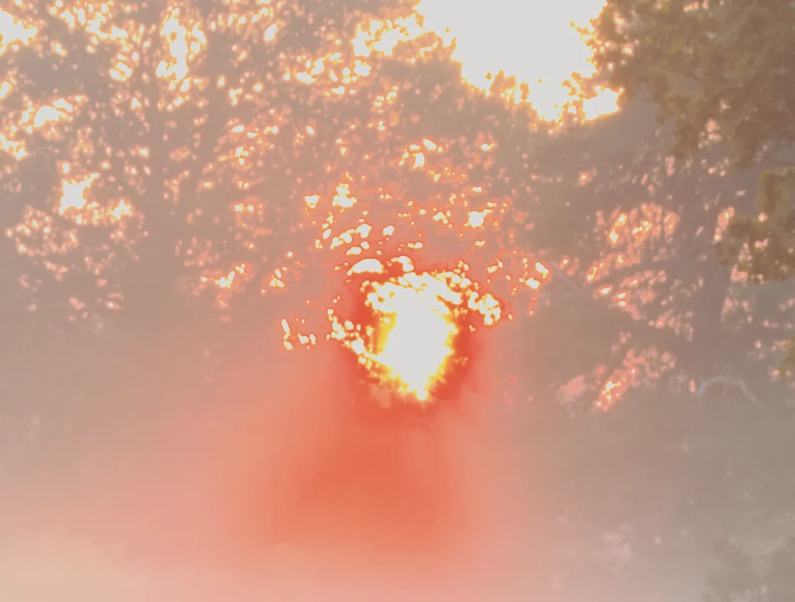
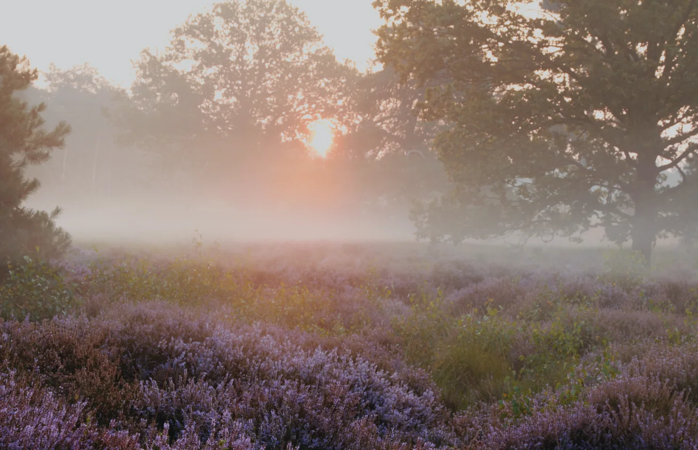
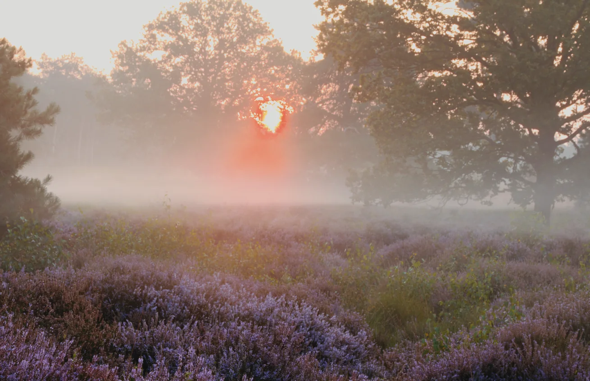
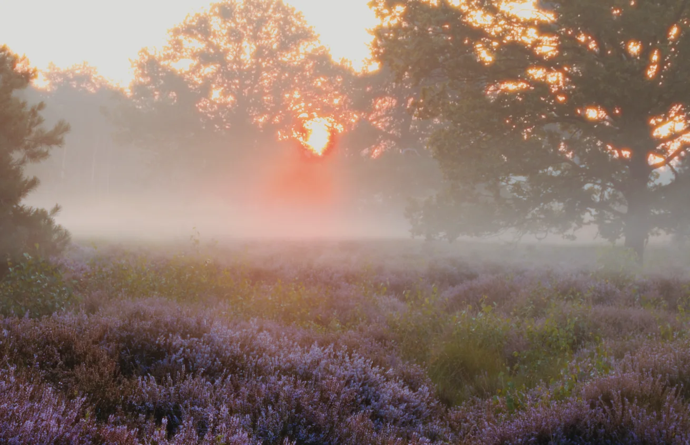
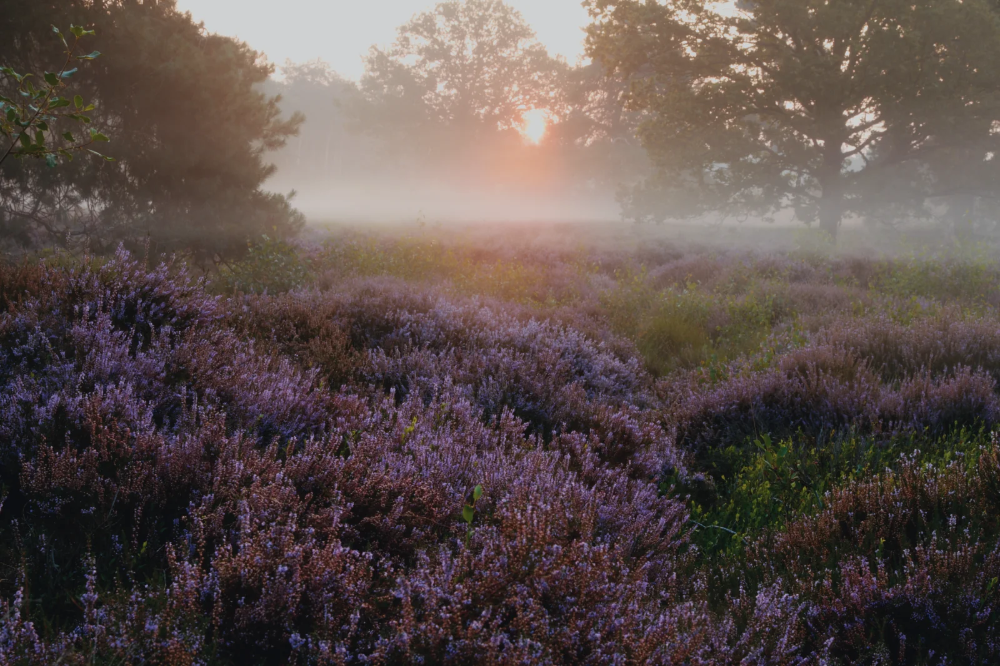
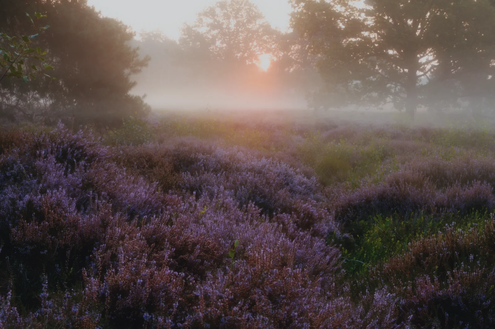
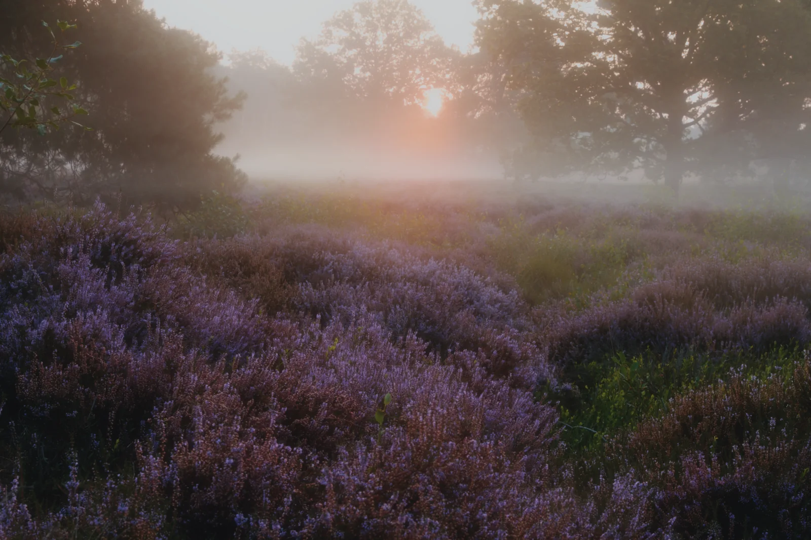

Optics
Light does not stay exactly where it lands. It scatters in the emulsion, reflects off the film base, and diffusion filters spread it on purpose. These effects give film its typical softness and the glow around bright highlights.
Highlights first
Halation and diffusion work only where the light is very bright. Capture One delivers the image with the highlights clipped at sensor white, so bright sources do not carry enough "energy" to glow. That is why, on a hazy photo taken into the sun, halation is almost invisible until you turn on Highlight boost.
No effects100% crop. Halation amount 2Almost no change: not enough light. 
Halation 1, Highlight boost 6A warm glow around the bright areas.


Halation and scatter
No halation Halation 1, boost 3 Halation 2, boost 6A clear warm glow. Spread 3A wider glow. Gold 200, same settingsRed fringes of a film with a weak anti-halation layer. Emulsion scatter 1Slightly softer edges.


Halation amount
Spektrafilm optics › Halation and scatter
- Range
- 0–4
- Default
- 0
The strength of halation: light that has passed through the emulsion, reflected off the film base and come back, exposing the layers a second time around bright areas. The red layer lies closest to the base, so halation is reddish. 1 is the physical value for the chosen film.
When to use it
Sun in the frame, backlight, street lamps, neon, reflections on water. Start at 1 with Highlight boost 2–3.
Pitfalls
At 0 all the halation sliders below are inactive. Without Highlight boost the effect is often invisible on images from C1.
Halation spread
Spektrafilm optics › Halation and scatter
- Range
- 0–4
- Default
- 1
The reach of the glow. 1 is the radius that follows from the thickness of the base: about 65 µm for still-camera film and about 50 µm for cinema film. Higher values give a wider, softer glow.
Emulsion scatter and Emulsion scatter spread
Spektrafilm optics › Halation and scatter
- Emulsion scatter
- 0–2, default 0
- Spread
- 0–4, default 1
Light scattering inside the emulsion itself, without reflection. It gives a very fine softening of edges and a faint glow over a few micrometres. It is one of the reasons film looks less "digitally sharp".
Typical values
0.5–1. If the image is too soft, lower it.
Highlight boost (EV)
Spektrafilm optics › Halation and scatter
- Range
- 0–20 EV
- Default
- 0
Rebuilds the light above white: it stretches the brightest areas before halation and scatter are applied. This lets the sun and lamps glow even though C1 clipped them at white.
Typical values
2–3 for a subtle glow, 6 or more for a strong one. It works only together with halation or scatter.
Highlight boost range and Highlight protection (EV)
Spektrafilm optics › Halation and scatter
- Range
- 0–1, default 0.3
- Protection
- 0–10 EV, default 2
Highlight protection sets the brightness at which the boost begins. With Measure protection down from the brightest highlight turned on, it is counted in EV below the brightest point: 1–2 EV boosts only the brightest spots. Range sets how gently the boost builds up.
Measure protection down from the brightest highlight
Spektrafilm optics › Halation and scatter
- New look
- on
On: the threshold is counted from the brightest highlight in the frame. Off: the original Spektrafilm rule, a threshold in EV above middle grey. Images from C1 usually end 2–3 EV above grey, so with the original rule and high protection the boost does nothing. The panel then shows a warning.
Override stock halation channels
Spektrafilm optics › Halation and scatter
- Default
- off
- Red strength, Green strength, Blue strength
- 0–1, default 0.05 / 0.015 / 0
Replaces the halation colour from the film profile with your own values for R, G and B. The sliders' default values are a "use the film" marker: until you move them, the film's own halation colour still applies.
When to use it
For the look of a film without an anti-halation layer, in the style of CineStill: red 0.3, green 0.1, blue 0.015 and Halation amount 1–2. No profile in the panel reproduces such a film by itself. These are the values from the original model for a film without an anti-halation layer.

No halation 
Portra 400, Halation 1.5, boost 4Halation colour from the film profile: almost invisible. 
Override 0.3 / 0.1 / 0.015A red fringe around the bright edges and highlights.


Measurement: Portra 400, Halation amount 1.5. Around bright areas the film's own halation colour adds almost no red; the override adds clearly more. Highlight boost (EV) 4 strengthens both.
Diffusion filters
A diffusion filter moves part of the light from the sharp image into a glow made of a core, a halo and a bloom. The model preserves energy: the light does not disappear, it only moves. Camera diffusion works like a filter on the lens, in front of the film. Print diffusion works in the enlarger, at the print.
No filter 
Glimmerglass 1Clean and subtle, black untouched. Black Pro-Mist 1A tight halo, deep black. 
Pro-Mist 1A pastel haze, lighter shadows. 
CineBloom 1A wide, warm glow over the whole frame. Print diffusion, Black Pro-Mist 1The glow comes from the shadows, not the highlights.


Filter
Spektrafilm optics › Camera diffusion and Print diffusion
- Options
- Off, Black Pro-Mist, Glimmerglass, Pro-Mist, CineBloom
- Default
- Off
| Filter | Character | When |
|---|---|---|
| Glimmerglass | Mostly core, a small halo, a weak long tail. Smooths micro-contrast, black stays. | Portraits, when it should be delicate. |
| Black Pro-Mist | A clear, tight halo that fades quickly. Deep black, a warm halo with a slight yellow-green tint. | The classic "filmic" glow of highlights. |
| Pro-Mist | A wide, pastel haze, a balance of halo and bloom. Lightens the shadows. | Dreamy, nostalgic, light in fog. |
| CineBloom | Reaches across the whole frame, a slow tail, the warmest edge. | Retro, strong atmosphere. |
Pitfalls
While the filter is Off, the other sliders in the section are inactive. Their saved values are kept. Print diffusion works only in Print Simulation.
Filter strength
Spektrafilm optics › Camera diffusion and Print diffusion
- Range
- 0–2
- Default
- 0.5
The filter strength in the "grades" used in shops: 1/8, 1/4, 1/2, 1, 2. At strength 1 the filter diverts about half of the light, at 2 about three quarters, before the character of the filter family is taken into account.
Typical values
0.25–0.5 for a subtle effect, 1 for a clear one. The slider moves in steps of 0.125; type other values (e.g. 0.3) into the number field.
Spatial scale and Halo warmth
Spektrafilm optics › Camera diffusion and Print diffusion
- Spatial scale
- 0–4, default 1
- Halo warmth
- −1.5 to 1.5, default 0
Spatial scale scales the reach of the glow, for example for a different print size. Halo warmth tints the outer halo: positive values warm it, negative values cool it.
Filter core, halo and bloom
Spektrafilm optics › Camera diffusion and Print diffusion
- Intensity
- 0–4, default 1
- Size
- 0.1–4, default 1
Advanced multipliers for the three parts of the glow: the core (right next to the light), the halo (medium reach) and the bloom (furthest reach): Core intensity, Core size, Halo intensity, Halo size, Bloom intensity, Bloom size. The same sliders are in Camera diffusion and Print diffusion. 1 is the character of the chosen filter family.
When to use it
When you want your "own" filter, for example Black Pro-Mist with a smaller halo and more bloom.
Camera or enlarger
Both filters use the same model and the same sliders. What differs is their place in the chain, and so the direction of the glow. A filter on the camera spreads the highlights of the scene, so bright areas glow into dark ones. A filter in the enlarger spreads the light passing through the negative: the brightest parts of the negative are the shadows of the scene, so the glow runs from the shadows into the highlights and the print darkens around dark shapes.
No filterA light band on a dark background and a dark band on a light one. Camera diffusionA warm glow spreads into the dark fields. The light ones stay. Print diffusionA cool shadow spreads into the light fields. The black stays. Both at onceThe edge softens from both sides.


Measurement: a 1600 px test chart, Portra 400 on Portra Endura, Black Pro-Mist, Filter strength 1, enlarged crop. Within 30 px of the edge, Camera diffusion lightens the dark field by 6/255 and changes the light one by 1. Print diffusion darkens the light field by 12 and changes the dark one by 0.3. At strength 0.5: 4 and 7. Further than 30 px from the edge the change is less than 1.
| Camera diffusion | Print diffusion | |
|---|---|---|
| Place in the chain | On the lens, in front of the film. | In the enlarger, between the negative and the paper. |
| What glows | The highlights of the scene. | The shadows of the scene, because they are bright in the negative. |
| What changes | Dark areas next to bright ones get lighter. | Bright areas next to dark ones get darker. |
| Black | Rises near highlights. | Stays deep. |
| Fringe colour | Warm, lighter. | Cooler, darker. |
| When | The glow of lamps, the sun and reflections, a soft portrait. | Silhouettes and branches against a bright sky, when black must stay black. |
| Mode | Print Simulation and Scan. | Print Simulation only. |
No filter100% crop. Camera diffusion, Black Pro-Mist 1The bright sky glows into the dark shapes: they get lighter and lose their black. Print diffusion, Black Pro-Mist 1The dark shapes stay black; the sky between them darkens.


On this kind of crop, the dark areas get clearly lighter with the filter on the camera and hardly change with the filter in the enlarger. The bright sky darkens a little with the filter on the camera and much more with the filter in the enlarger.
Both filters at once
The filters do not cancel each other out. Each one changes a different side of the edge, so together they lower contrast on both sides. On the test chart at strength 1, the dark field lightens by 7, as with the camera filter alone, and the light field darkens by 8 instead of 12. Start with one filter. Add the second only when you know which side of the edge is missing.
Scanner glare (Scanner glare) is described in chapter 9.